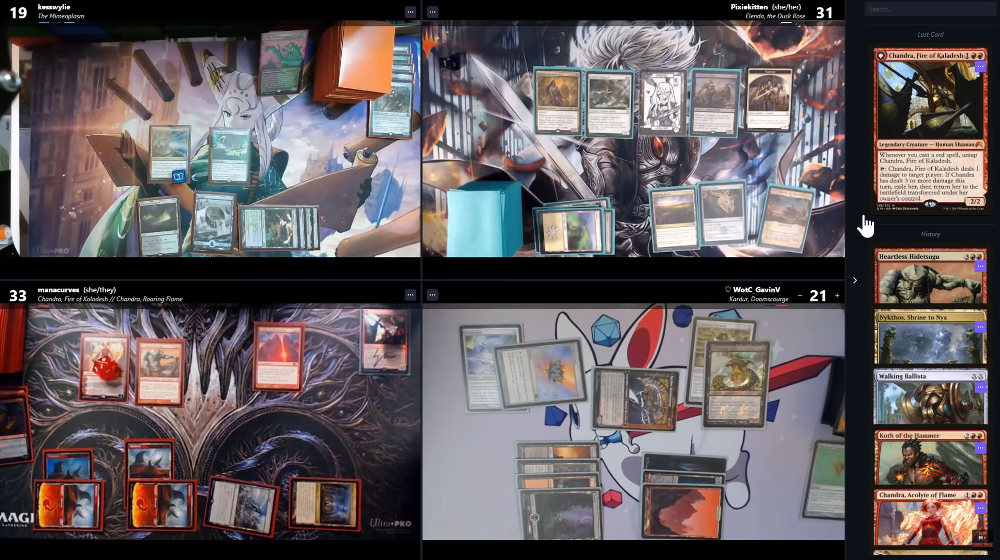

Anthony Hlebania
Fernando Astolfo Dos Santos
Fernando Hiroaki Suzuki - RA: 11202130281
Leonardo Di Credico
Magic: The Gathering (MTG) é um jogo de cartas colecionáveis lançado em 1993 pela Wizards of the Coast. O objetivo do jogo é derrotar o oponente reduzindo sua vida a zero ou por meio de condições de vitória específicas. Nele, cada jogador constrói seu próprio baralho antes do jogo, escolhendo entre milhares de cartas disponíveis, que representam criaturas, feitiços, terrenos e outros tipos de cartas existentes no jogo.
Além da forma física, o Magic: The Gathering também possui uma forma de jogo online chamada "Magic Arena" e uma forma online de jogar com as cartas físicas através de um site da própria Wizards of the Coast chamado de "Spelltable". Nessa versão, os jogadores usam seus decks físicos para jogar contra oponentes de todo o mundo através da internet. O "Spelltable" oferece uma experiência de jogo que visa se aproximar à versão física, fazendo com que os jogadores tenham diversos formatos para serem jogados.
Para a identificação das cartas no "Spelltable", os jogadores utilizam um sistema de stream que envia imagens de seus tabuleiros em tempo real para o site onde os outros jogadores podem ver todas as cartas em suas respectivas mesas tornando possível a simulação do jogo físico, fornecendo uma prova visual das ações tomadas durante a partida. Essa medida é adotada para garantir a integridade do jogo e evitar trapaças, além de aumentar a imersão no jogo.
Embora o uso de câmeras para identificar as cartas no "Spelltable" seja uma solução prática, como em qualquer programa, pode haver problemas ocasionais e bugs. O bug mais preocupante é o que impede o sistema de ler quais cartas estão na mesa, pois geralmente a qualidade da imagem nem sempreé das melhores então o recurso de scanear a carta facilita a vida dos jogadores. Isso pode ser frustrante para os jogadores, pois pode resultar em jogadas erradas por falta de conhecimento das cartas em campo.
Diante disso, o projeto do Grupo Crakehall Boars consiste em desenvolver um programa que consiga replicar a identificação de cartas que o já consolidado site "Spelltable" realiza nas partidas de Magic: The Gathering.
Com relação aos objetivos, nosso projeto tem como um deles, a criação desse programa que consiga realizar a identificação das cartas de Magic utilizadas nas partidas online. Mas além disso, o objetivo principal é utilizar os conceitos vistos na disciplina de Processamento de Vídeo para o desenvolvimento de um projeto que possa atender demandas reais do nosso cotidiano.

Após as entrevistas decidimos que o Tema do trabalho será:
Criação de um sistema de identificação de cartas de Magic: The Gathering
Magic: The Gathering (MTG) é um jogo de cartas colecionáveis lançado em 1993 pela Wizards of the Coast. O objetivo do jogo é derrotar o oponente reduzindo sua vida a zero ou por meio de condições de vitória específicas. Nele, cada jogador constrói seu próprio baralho antes do jogo, escolhendo entre milhares de cartas disponíveis, que representam criaturas, feitiços, terrenos e outros tipos de cartas existentes no jogo.
Além da forma física, o Magic: The Gathering também possui uma forma de jogo online chamada "Magic Arena" e uma forma online de jogar com as cartas físicas através de um site da própria Wizards of the Coast chamada de "Spelltable". Nessa versão, os jogadores usam seus decks físicos para jogar contra oponentes de todo o mundo através da internet. O "Spelltable" oferece uma experiência de jogo que visa se aproximar à versão física, fazendo com que os jogadores tenham diversos formatos para serem jogados.
Para a identificação das cartas no "Spelltable" os jogadores utilizam um sistema de stream que envia imagens de seus tabuleiros em tempo real para o site onde os outros jogadores podem ver todas as cartas em suas respectivas mesas tornando possível a simulação do jogo físico, fornecendo uma prova visual das ações tomadas durante a partida. Essa medida é adotada para garantir a integridade do jogo e evitar trapaças, além de aumentar a imersão no jogo.
Embora o uso de câmeras para identificar as cartas no "Spelltable" seja uma solução prática, como em qualquer programa, pode haver problemas ocasionais e bugs. O bug mais preocupante é o que impede o sistema de ler quais cartas estão na mesa, pois geralmente a qualidade da imagem nem sempre é das melhores então o recurso de scanear a carta facilita a vida dos jogadores. Isso pode ser frustrante para os jogadores, pois pode resultar em jogadas erradas por falta de conhecimento das cartas em campo.
Dessa forma, o trabalho tem como objetivo desenvolver um programa que consiga reconhecer
as cartas utilizadas nas partidas online, de forma efetiva e satisfatória, utilizando
os conceitos vistos na disciplina de Processamento de Vídeo.
